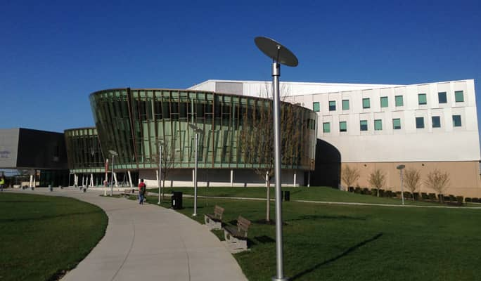

My Education
High School
I graduated from Simon Kenton High School in May 2024. During my time there I was a part of the YSA program, meaning that I started taking classes at NKU during my junior year.
College / University
I’m currently pursuing a degree in Network and System Database Administration at NKU (Northern Kentucky University).
